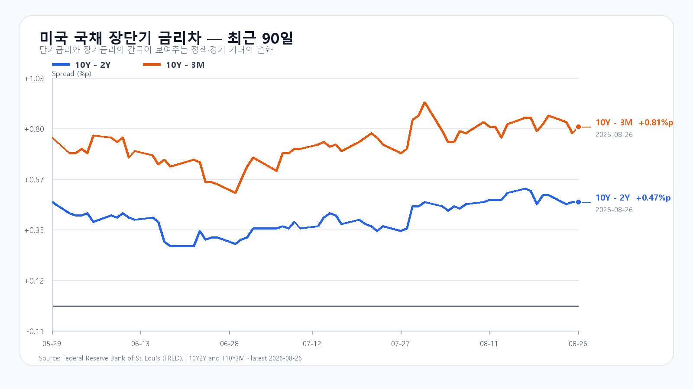

오늘의 한 문장
AI 수요는 다시 확인됐지만, KOSPI 7,100은 개장 직후 강세가 외국인·비차익 순매수로 이어질 때 열립니다.
전날 6,800 회복은 이미 가격에 들어갔다
KOSPI는 8월 26일 6,704.10~6,887.18을 오간 뒤 6,808.21로 0.97% 상승 마감했습니다. KODEX 레버리지는 1.84% 오른 107,495원이었습니다. 상승 종목 572개가 하락 종목 302개를 웃돌았고, 삼성전자와 SK하이닉스의 자사주 매입으로 추정되는 기타법인 매수가 지수를 받쳤습니다.
이 상승은 엔비디아 실적 발표 전에 끝난 한국장의 움직임입니다. 미국장에서 같은 흐름을 후행 반영한 EWY -0.54%도 오늘의 새 악재로 다시 더하지 않습니다. 새 신호는 실적 발표 뒤 엔비디아와 반도체 ETF의 시간외 상승입니다.
| 항목 | 확정값 | 오늘 기준 |
|---|---|---|
| KOSPI | 6,808.21(+0.97%) | 6,800 방어 · 7,100 안착 |
| KODEX 레버리지 | 107,495원(+1.84%) | 105,000원 방어 · 110,190원 회복 |
| 외국인·비차익 | +131억 · -1조1,921억원 | 동반 순매수 전환 여부 |
| 삼성전자·SK하이닉스 NXT | 269,500원(+3.06%) · 1,762,000원(+4.38%) | 09시 11분 상승폭 유지 여부 |
엔비디아는 수요를 증명했고 시장은 공급을 묻는다
엔비디아의 2분기 매출은 962억2,100만달러로 전년보다 106% 늘었습니다. 데이터센터 매출은 890억달러로 117% 증가했습니다. 3분기 매출 가이던스 1,080억달러±2%는 시장 예상 1,048억6,000만달러를 웃돌았습니다. 중국 데이터센터 컴퓨트 매출을 넣지 않고도 제시한 수치입니다.
발표 뒤 시간외에서 엔비디아 +4.71%, Micron +3.79%, SOXX +2.50%, SMH +2.59%로 올랐습니다. 정규장의 엔비디아 -1.59%, SOXX +0.26%와는 다른 새 반응입니다.
수요가 강하다고 제약이 사라진 것은 아닙니다. 영업비용은 전년보다 55% 늘었고 공급망도 빠듯합니다. 국내에서는 HBM 수요 확인이 삼성전자와 SK하이닉스의 가격뿐 아니라 실제 외국인·프로그램 매수로 이어지는지가 중요합니다.
DDR5는 보합, 금리는 높은 채로 남았다
TrendForce의 8월 26일 공개치에서 DDR5 16Gb 현물 평균은 54.167달러로 보합이었습니다. DDR4 16Gb는 0.27% 오른 90.805달러, DDR4 8Gb는 0.60% 오른 43.637달러였습니다. HBM 수요 전망은 강하지만 범용 DDR5 현물까지 즉시 오른 것은 아닙니다.
미국 2분기 GDP는 연율 1.5%로 유지됐습니다. 민간 국내 최종수요는 4.2%로 상향됐고 PCE 물가와 근원 PCE도 각각 5.3%, 3.6%로 높아졌습니다. 미국 3개월물 3.85%, 2년물 4.19%, 10년물 4.66%, 30년물 5.18%였습니다. 10Y-2Y는 +0.47%p, 10Y-3M은 +0.81%p입니다.

오늘의 시나리오
KOSPI 6,800~7,100
Nvidia 실적과 NXT 상승이 하단을 받칩니다. 10년물과 환율, 전날 고점 매물이 상승 속도를 늦춥니다. 6,800을 지키면 6,900과 7,100을 차례로 시험합니다.
KOSPI 7,100~7,350
두 메모리 대형주가 09시 11분 상승폭을 지키고 외국인 현물과 비차익 프로그램이 함께 순매수로 전환합니다. 7,100 위에 안착해야 7,250과 7,350을 열 수 있습니다.
KOSPI 6,500~6,800
NXT 상승이 빠르게 사라지고 달러/원 상승과 프로그램 매도가 겹칩니다. 6,800을 회복하지 못하면 6,704.10과 6,500을 차례로 봅니다.
2차 지지 103,700원 · 1차 지지 105,000원 · 반등 기준 110,190원 · 저항 114,000원.
전체 장중 경로는 KOSPI 6,450~7,400으로 봅니다. 오늘 대응 점수는 공격 35 · 관망 50 · 방어 15입니다.
고용과 잭슨홀이 다음 확인값이다
미국 주간 신규 실업수당 청구는 오늘 오후 9시 30분에 나옵니다. Marvell은 28일 오전 5시 45분에 2분기 실적 컨퍼런스콜을 열고, Kevin Warsh 연준 의장은 같은 날 오후 11시에 잭슨홀에서 기조연설을 합니다.
장중에는 KOSPI 6,800선, KODEX 레버리지 110,190원, 외국인 현물과 비차익 프로그램의 동반 순매수, 삼성전자·SK하이닉스의 09시 11분 상승폭 유지가 더 직접적인 확인값입니다.